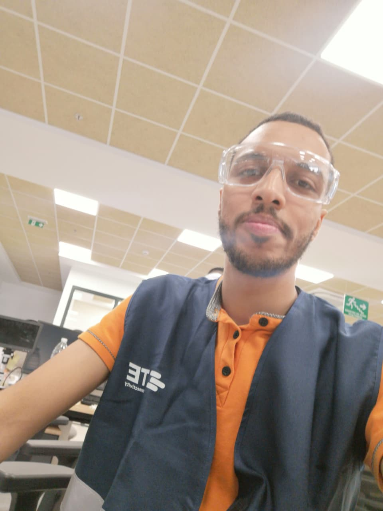
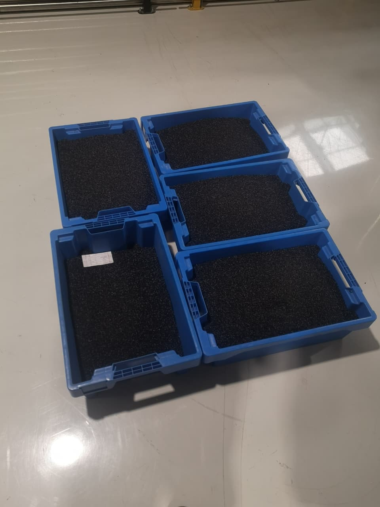
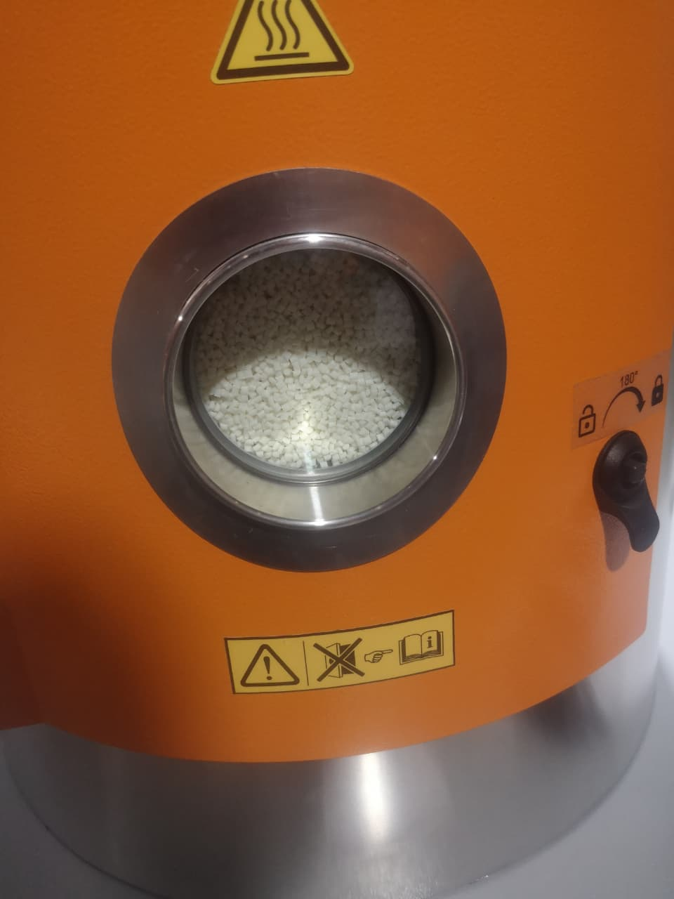
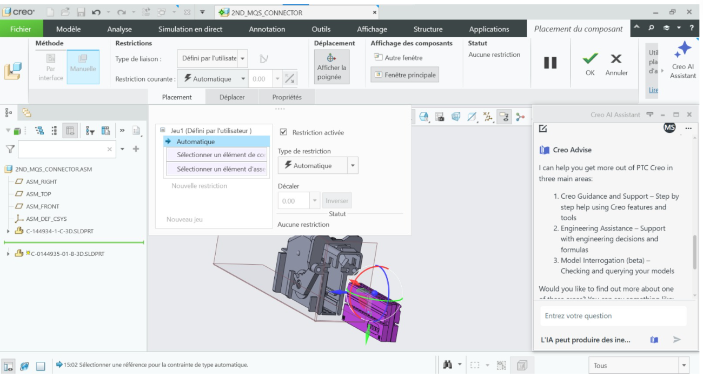

TE Connectivity · Product engineering internship
MQS Connector Locking Redesign
Industrial experience
The project
During my TE Connectivity internship, I worked on the external locking function of an automotive MQS connector.
The challenge
The locking concept had to fit a limited space while accounting for insertion, retention, assembly and injection-molding constraints.

My contribution
The work behind it
- 01
I broke down the locking requirements and compared design concepts through functional analysis.
- 02
I developed parametric CAD and assessed locking-beam deflection with mechanical calculations and ANSYS Mechanical FEA.
- 03
I used Excel/VBA for engineering calculations and prepared a prototype validation test plan.
A closer look
Photos & context



Outcome
What came out of it
The work produced redesign concepts, mechanical analysis and a validation plan. Final prototype test results are not claimed.
The case study focuses on the engineering method. Customer specifications and detailed manufacturing drawings are not shared.
Methods & tools
- Parametric CAD
- ANSYS Mechanical
- Excel & VBA
- DFM